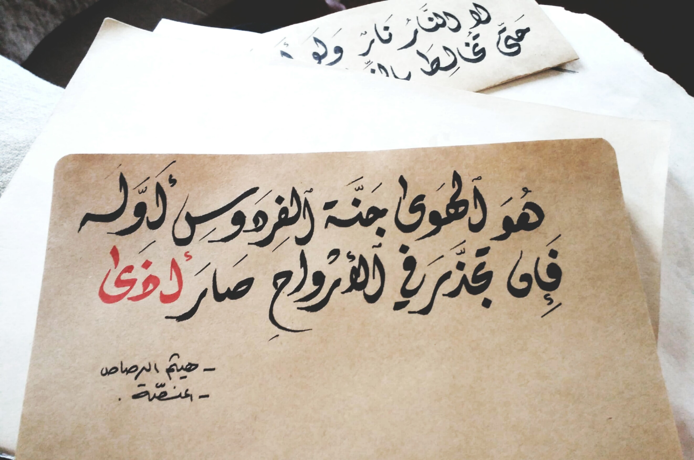

Welcome to my website, let me tell you a little about my self : ))
-
About
Fresh graduation with BA degree in Chemical Engineering. Trainer in ASAC in Softwaring field “Html,
Java, and CSS”. Patient, creative and have Perfect leadership skills, quick learner, high attention
to details
-
Education
- Code Fellows | Jordan, Amman
Tech training in Software Development 401 course | June, 2021
- Al-Balqa’a Applied university | Jordan, Al-Zarqaa
BA degree in Chemical Engineering | July, 2020
- Um al Heran school | Jordan, Amman
12th grade, Graduated with rate of 87.2% | September 2015
-
Experience
- Kewy Company | Amman | November 2020 – December 2020
• Brand manager for Qata’a application.
- Al-Bayt al ateq school | Amman | 14.sep.2020- 17.sep.2020
• Mathematical teacher
- “I am a chemical engineer” Website | Amman | May 2020 – July 2020
• Auditor for Arabic scientific articles.
- Tamkeen for work | Amman | 20 July 2018 – 20 December 2020
• Project manager for academic courses.
- Al-Manassah | Amman | 24 June 2020 – 30 October 2020
• Calligrapher, one of my tamblets shown below

These are the top ten courcse that I would like to learn:
- Learn how to learn
- Yousofy with tamkeen
- Digital markiting
- Photoshop
- Illestrator
- creating animation video
- sewing
- Embroidery
- English calligraphey
- Photography